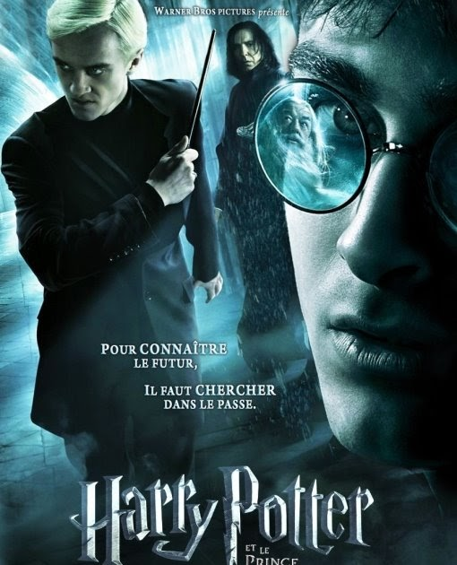

In Harry's sixth year at Hogwarts, Lord Voldemort and his Death Eaters are creating terror in the wizarding and Muggle worlds.
The best movie
To the ones that love magic and suspense

Harry Potter e o Enigma do Príncipe é o sexto livro da série Harry Potter, de J. K. Rowling. Em 24 horas, 6,9 milhões de cópias foram vendidas nos Estados Unidos, 250 mil por hora, se tornando o livro mais rapidamente vendido da história. A livraria Barnes & Noble registrou uma média de 105 cópias vendidas por segundo na primeira hora de vendas. É também o primeiro livro da série a ser menor do que seu antecessor imediato.